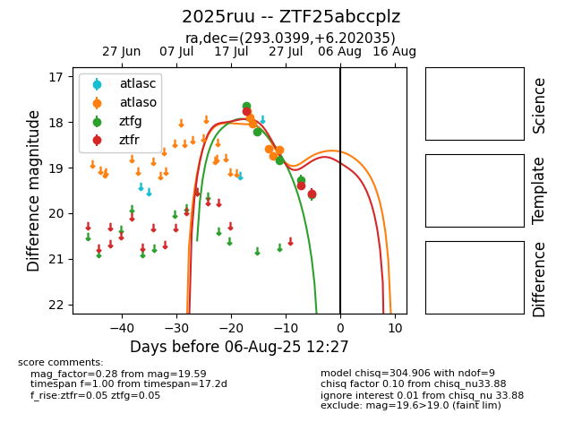

Target 2025ruu at 2025-08-06 17:07, see:
FINK: fink-portal.org/2025ruu
Lasair: lasair-ztf.lsst.ac.uk/objects/2025ruu
ALeRCE: alerce.online/object/2025ruu
TNS: wis-tns.org/object/2025ruu
YSE: ziggy.ucolick.org/yse/transient_detail/2025ruu
alt names
ZTF25abccplz (ztf,fink)
2025ruu (tns,yse)
coordinates:
equatorial (ra, dec) = (293.0399,+6.20204)
galactic (l, b) = (43.1440,-6.14938)
photometry
last atlaso=18.60, ztfg=19.59, ztfr=19.57
6 atlaso, 5 ztfg, 3 ztfr detections
